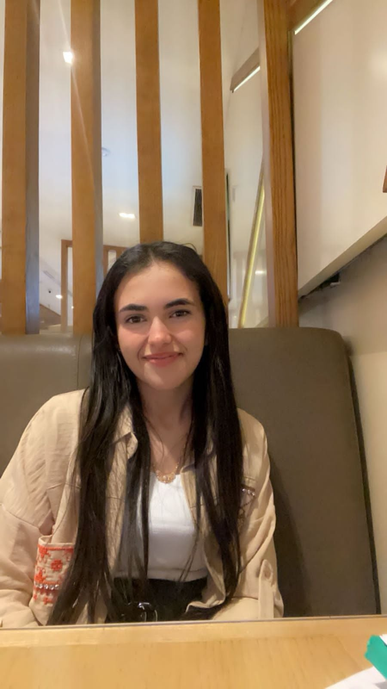
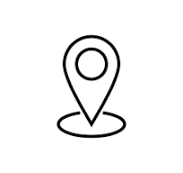

CONTACT
 :+216 58409255.
:+216 58409255. :meriemjerri64@gmail.com.
:meriemjerri64@gmail.com. - :sahloul,sousse.
PROFILE
- Computer engineering student.
- I consider my self a responsible and orderly person.
- I'm looking forward to new work opportunities.
MERIEM ELJERY
About Me
I'm Meriem Jery.I'm 20 years old.I'm a tunisian girl.My native country is Benguerden.I adore reading books.My favourite one is rich dad poor dad.My other interests are music and sport.I'm a second-year student in a digital technology preparatory program at Epi Digital School.I choose IT field as it forests innovationand creativity,allowing professionals to work with advanced technologies.Flexible hours and remote work options often provide a better work-life balance.It also facilitates global collaborations,enabling teams to work together internationally.I'm a member in diferent organisations
Education
Epi Digital School University
IT-engineering student ,in progressBenguerden 1 secondry school
2021-2023
LANGUAGE
- Native Arabic
- Advanced English
- Fluent French
- Fluent Italien
COMPUTER SKILLS
- Operating Systems: Windows, macOS, Linux
- Microsoft Office Suite: Word, Excel, PowerPoint
- Spreadsheet Expertise: Excel, Google Sheets (tables, formulas, charts, pivot tables)
- Advanced Word Processing: formatting, style creation, mail merge
- Presentation Software: PowerPoint, Prezi, Google Slides
- Project Management Tools: Trello, Asana, Microsoft Project
- Programming Languages: Python, Java, JavaScript, C, HTML/CSS
- Large Database Management: SQL, Oracle, MySQL
- Network Configuration: LAN, WAN
- Server Management: Windows Server, Linux Server
WORK EXPERIENCE
- Red Crescent:I have been an active member since 2021 and received a first aid diploma
- JCI Benguerden:As a full member,I also obtained a graphic design certification on December-15-2022 by Alpha center
- Other associations:I participate in various initiatives that align with my ineterests such as Reading club in my university